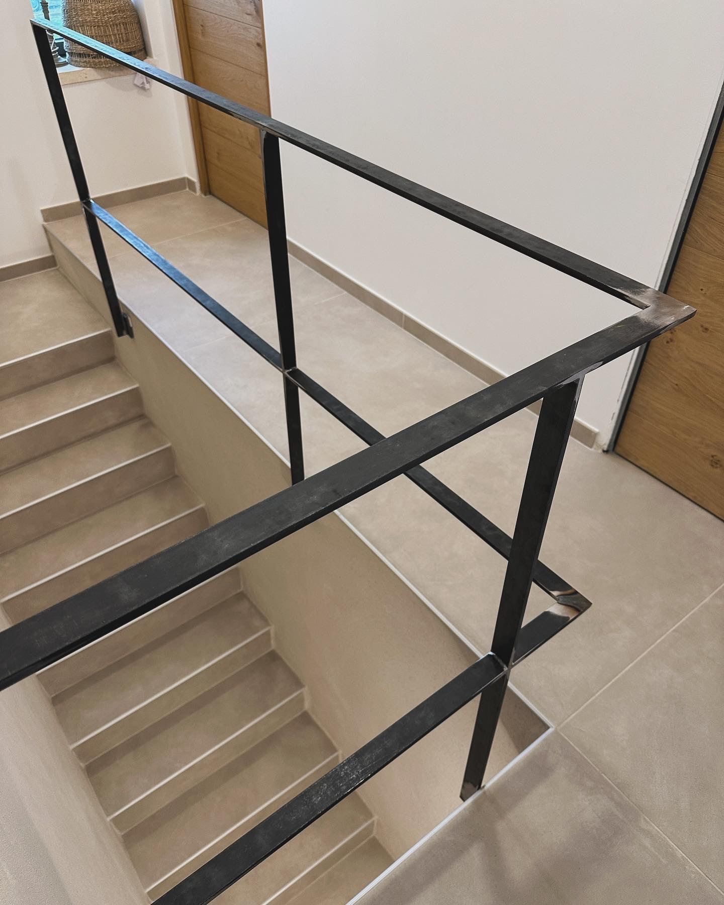

Portfolio
Réalisations
Un aperçu de nos ouvrages : garde-corps, escaliers, verrières, portails et clôtures, conçus et fabriqués sur mesure pour des particuliers et des professionnels.

Verrière de toit

Rambarde d'escalier

Portail sur mesure
Escalier métallique
Clôture sur mesure
D'autres réalisations seront ajoutées au fur et à mesure — n'hésitez pas à nous envoyer vos photos de chantiers récents.
Votre projet mérite le même soin
Parlons de vos envies, de vos contraintes et de vos délais.
Nous contacter